来源：Waveshare 官方中文 Wiki；保存日期：2026-11-01（America/Denver）。附件链接可能需要联网。
|
| ||||||||||||||||||||||
| ||||||||||||||||||||||
RP2350B-Plus-W 是微雪(Waveshare)设计的低成本，高性能的微控制器开发板。在较小的板型下，使用 RP2350B 作为主控，配备了 Raspberry Pi Radio Module 2 模块，集成 16MB 的片上 Flash 并预留 PSRAM 接口，便于开发和集成到产品中。
| ||
|
为了方便在电脑上使用 MicroPython 开发 Pico/Pico2 板，建议下载 Thonny IDE
【MicroPython】machine.Pin类函数详解
【MicroPython】machine.PWM类函数详解
【MicroPython】machine.ADC类函数详解
【MicroPython】machine.UART类函数详解
【MicroPython】machine.I2C类函数详解
【MicroPython】machine.SPI类函数详解
【MicroPython】rp2.StateMachine类函数详解
对于 C/C++，建议使用 Pico VSCode 进行开发，这是一款 Microsoft Visual Studio Code 扩展，旨在让您在为 Raspberry Pi Pico 系列开发板创建、开发和调试项目时更加轻松。无论您是初学者还是经验丰富的专业人士，此工具都可以帮助您自信而轻松地进行 Pico 开发。下面我们介绍如何安装该扩展并使用。
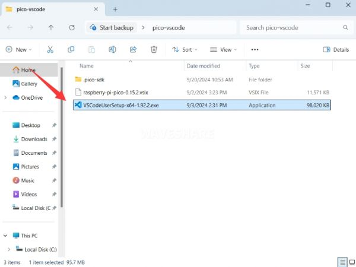
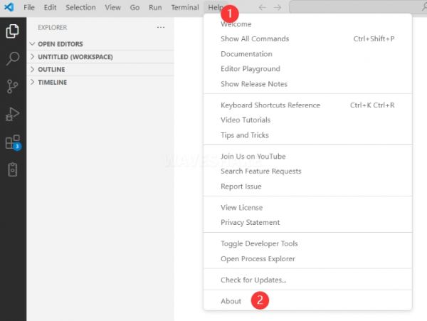
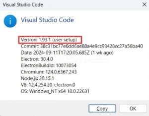
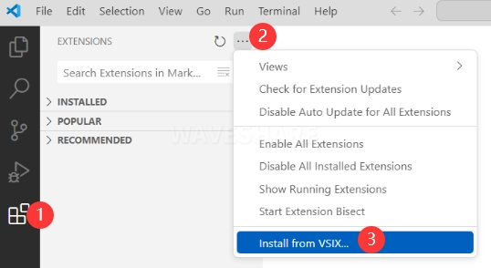
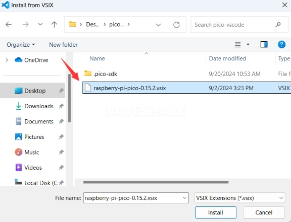
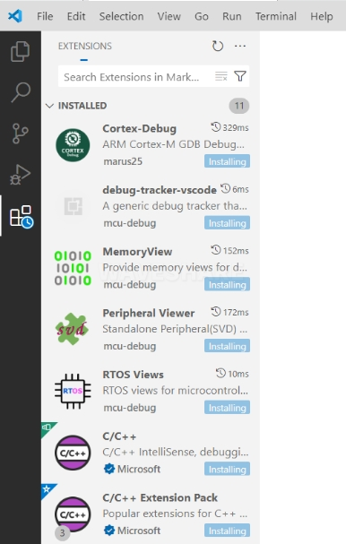
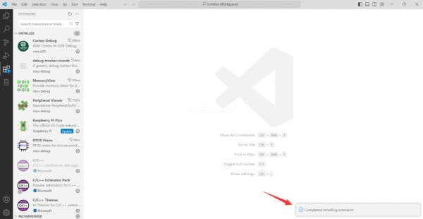
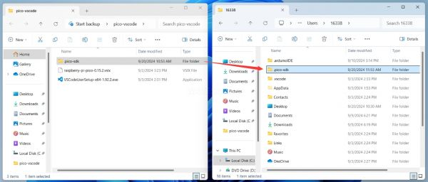
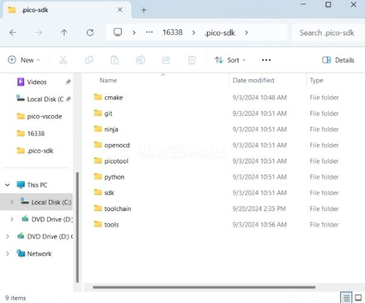
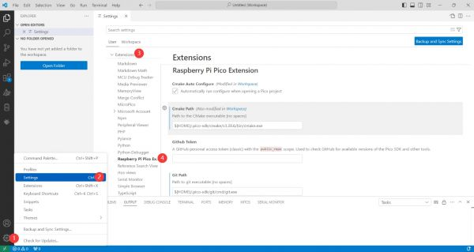
Cmake Path：
${HOME}/.pico-sdk/cmake/v3.28.6/bin/cmake.exe
Git Path:
${HOME}/.pico-sdk/git/cmd/git.exe
Ninja Path:
${HOME}/.pico-sdk/ninja/v1.12.1/ninja.exe
Python3 Path:
${HOME}/.pico-sdk/python/3.12.1/python.exe
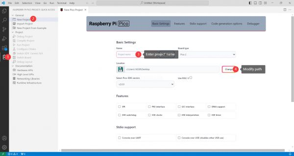
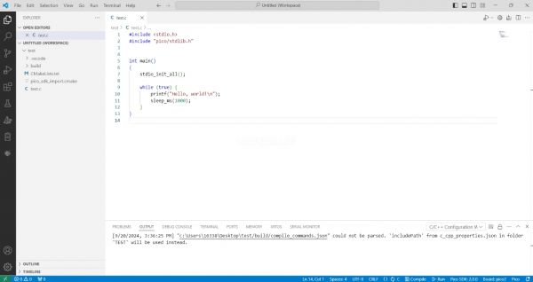
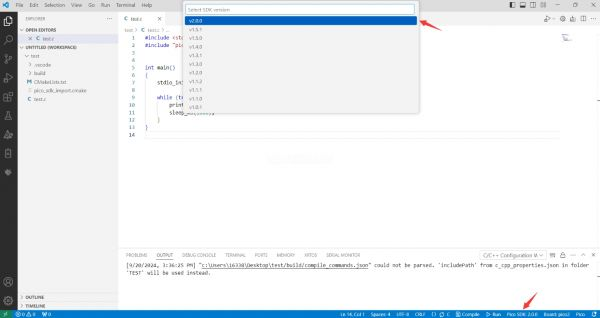
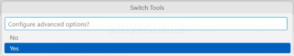
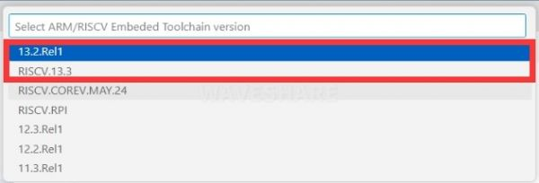
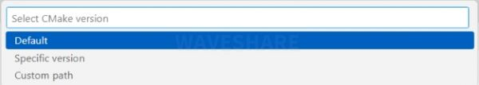
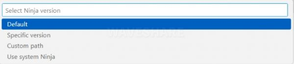
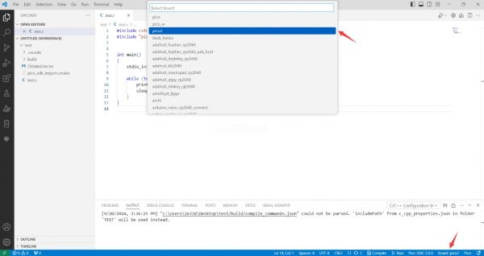
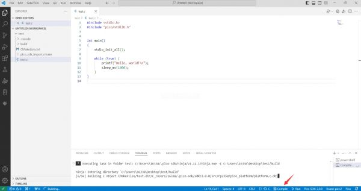
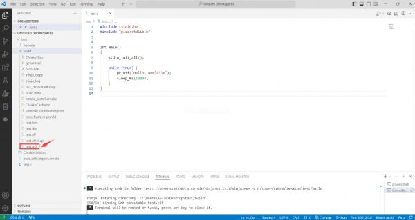
这里提供两种方法烧录固件
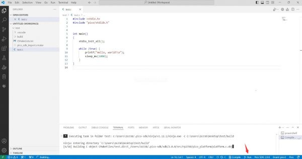
1.按住Boot按键 2.将开发板连接到电脑上 3.然后会电脑会将开发板识别成一个U盘设备 4.将.uf2文件复制到U盘中，设备就会自动重启，程序烧录成功
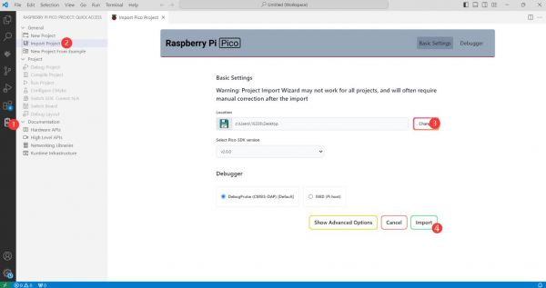
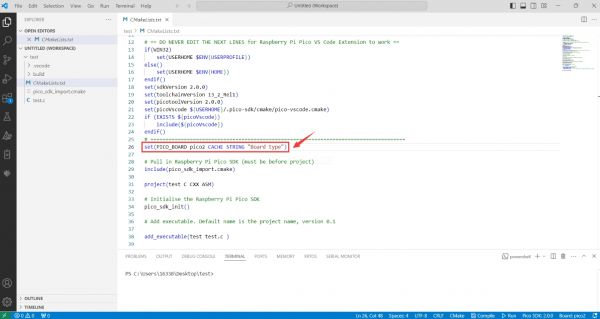
set(PICO_BOARD pico CACHE STRING "Board type")
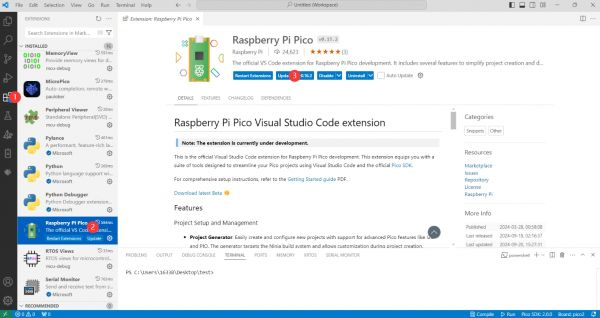
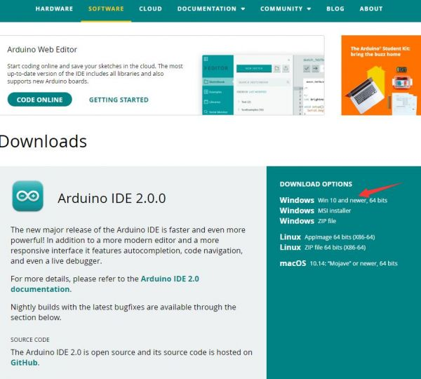
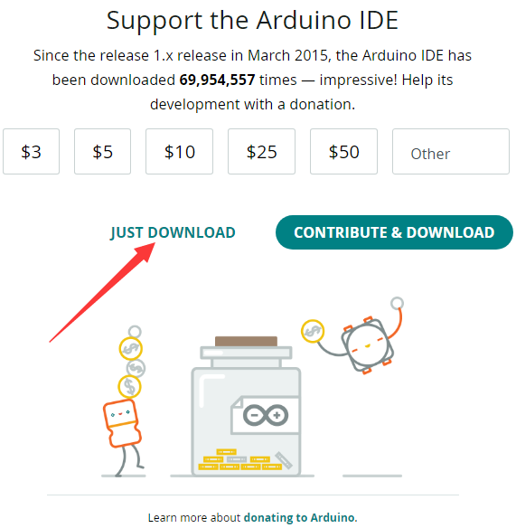
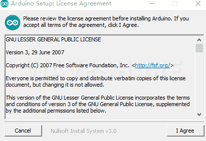
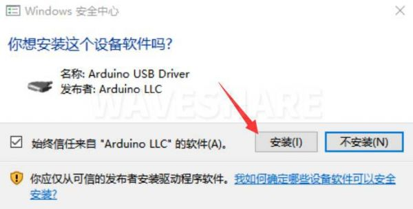
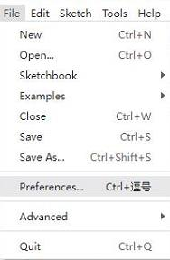
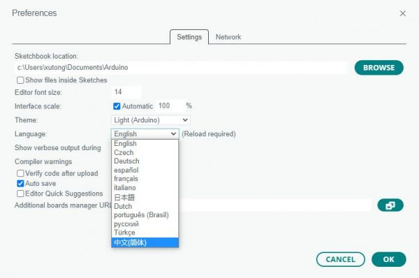
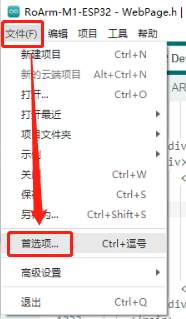
https://github.com/earlephilhower/arduino-pico/releases/download/4.5.2/package_rp2040_index.json
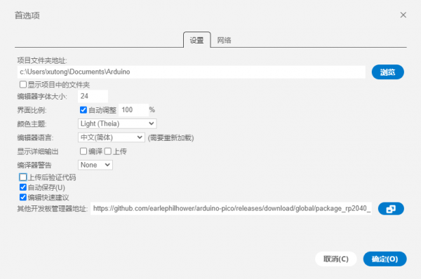
注意：如果您已经有 ESP32 板 URL，您可以使用逗号分隔 URL，如下所示：
https://dl.espressif.com/dl/package_esp32_index.json,https://github.com/earlephilhower/arduino-pico/releases/download/4.5.2/package_rp2040_index.json
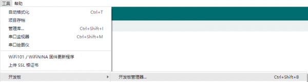
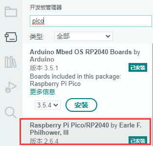
C:\Users\[username]\AppData\Local\Arduino15\packages
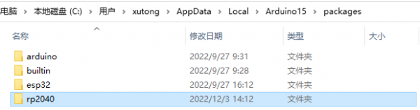
注意：将里面用户名：[username]替换成自己的用户名
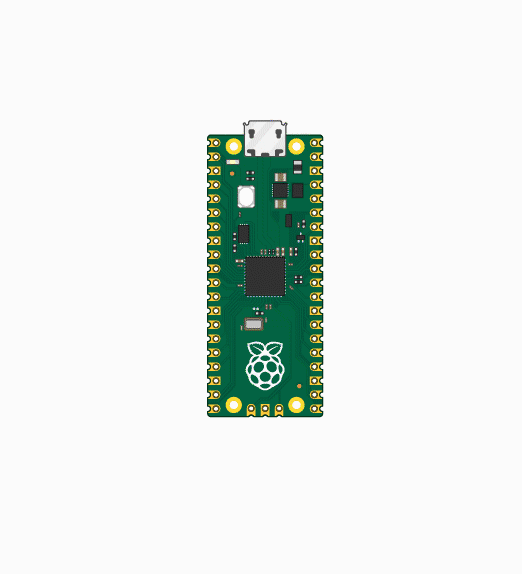
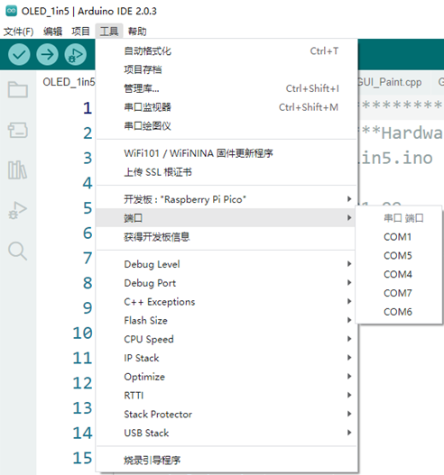
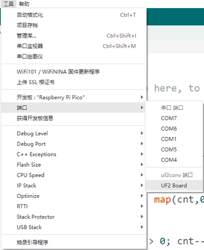
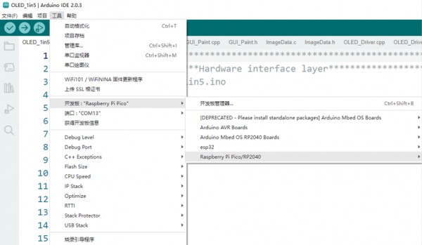
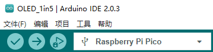
MircoPython视频例程(github)
MicroPython固件/Blink例程（C）
树莓派官方C/C++示例程序 (github)
树莓派官方micropython示例程序 (github)
Arduino官方C/C++示例程序 (github)
可以参考RP2350-datasheet中RP2350-E9部分内容
联系人：庄工
EMAIL: 2880803589@qq.com
电话: 0755-83040712
QQ: 2880803589
微信：扫下方二维码添加